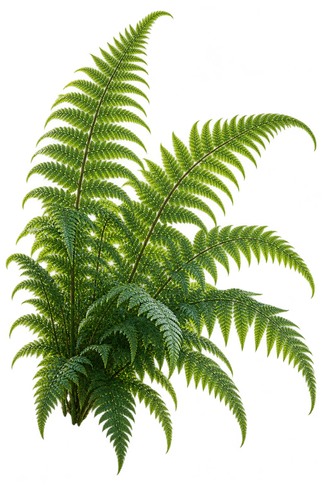

Inside your Lab.
Earlier runsRecent runs
Select a Molecule◌ Working ◇ Needs you ✓ Recorded ! Blocked Ⅱ Paused ✓ Approved
MOLECULE /
GitHub Issues · sample intake Issues ↗Pull requests ↗
≡
FORMULA
ATOMSSelect a step to inspect its behavior
Ledger · selected Molecule
Evidence stays with this Molecule.
LAB OVERVIEW · SAMPLE DATA
Lab analytics
All sample Molecules · select a cube to inspect its evidence.
No merge receipts in this sample. Unknown is not zero.
One proposed process change. No evaluated gain yet.
NEEDS YOUR DECISIONReview evidence before approval
MOLECULE OUTCOMESSample run distribution
Published, merged and production-verified are separate outcomes. Select a Molecule above to inspect its evidence.